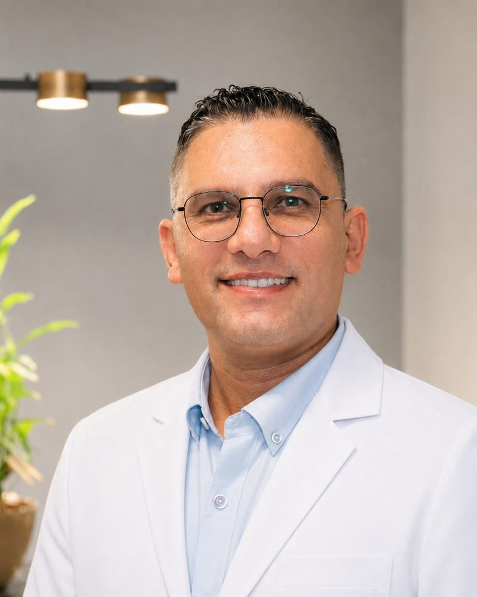
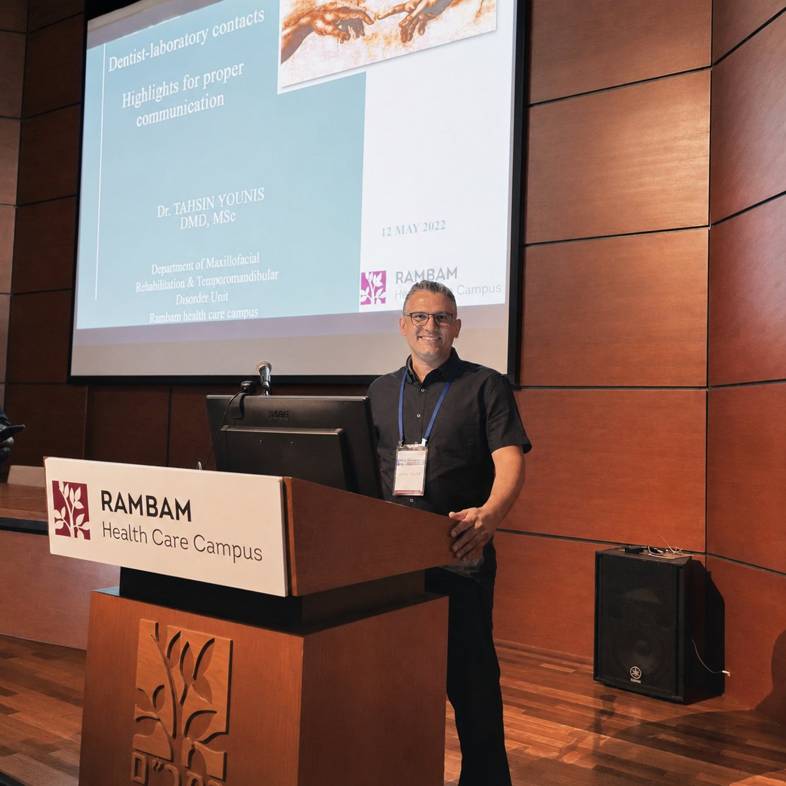
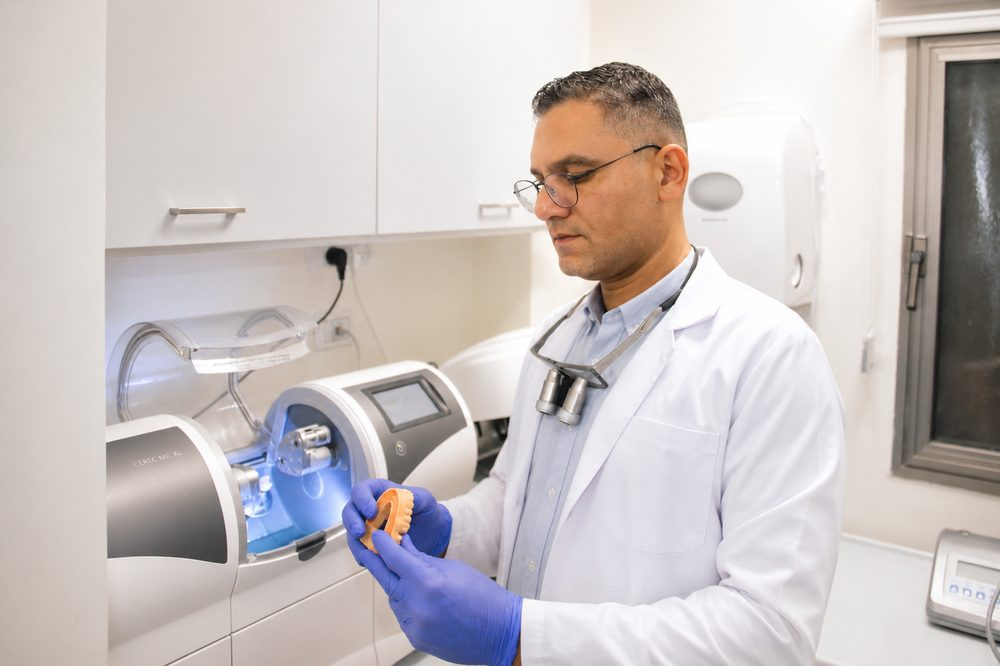
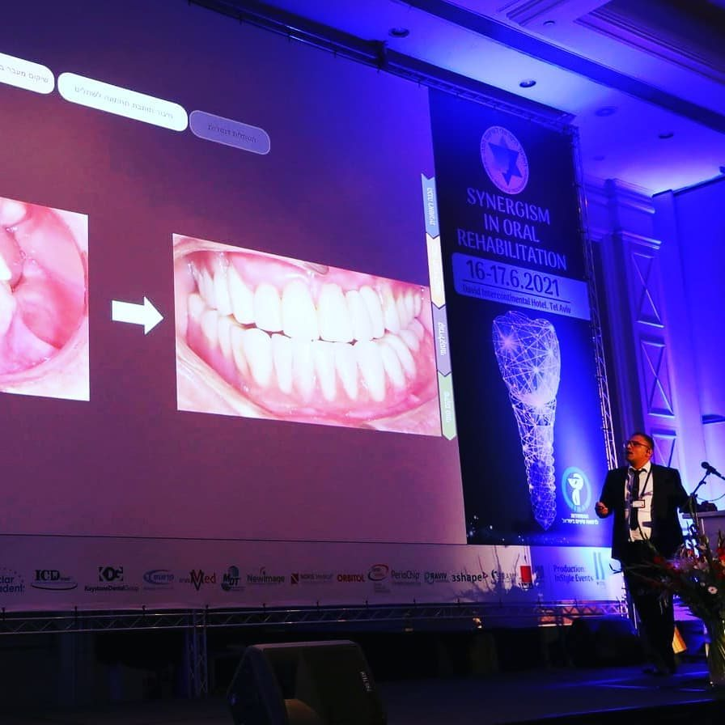

טיפול מורכב מתחיל אצל מומחה לשיקום הפה
עם למעלה מ־15 שנות ניסיון, ד״ר תחסין יונס מטפל במקרים מורכבים בתחומי שיקום על גבי שתלים, טיפולי חניכיים, כתרים וציפויים אסתטיים.
5.0 ב־MedReviews · חוות דעת מאומתותמתחילים בשיחה, בדיקה והבנת האפשרויות — לפני שמחליטים כיצד להתקדם.

בטיפול מורכב, כל החלטה משפיעה על השלב הבא

רק חלק קטן מרופאי השיניים בישראל מחזיקים בתואר מומחה לשיקום הפה. התואר ניתן לאחר מסלול התמחות קליני ואקדמי של כארבע שנים במוסד מוכר, הכולל טיפול במקרים מורכבים ורב־תחומיים, לימודים מעמיקים, סבבים מקצועיים ובחינות.
ההכשרה מקנה למומחה ראייה רחבה של ההיבטים האסתטיים והתפקודיים, ויכולת לחבר בין אבחון, תכנון, ביצוע ומעקב. ד״ר יונס השלים את תוכנית ההתמחות בשיקום הפה באוניברסיטה העברית–הדסה וקיבל תעודת מומחה מטעם משרד הבריאות.
שיקום פה מורכב עשוי לשלב טיפול בחניכיים, טיפולי שורש, יישור שיניים, כירורגיה, השתלות ובניית עצם. כל אחד מהשלבים צריך להתבצע מתוך הבנה של מטרת השיקום הסופית, ולא כטיפול נפרד בפני עצמו.
תפקידו של המומחה לשיקום הפה הוא לרכז את התמונה הכוללת: לקבוע את מטרות השיקום, לבנות את סדר השלבים, לתאם בין התחומים והגורמים המטפלים וללוות את הביצוע, המעקב והתחזוקה — תוך תיאום ציפיות עם המטופל.
עבורכם, המשמעות היא כתובת מקצועית אחת שרואה את התמונה המלאה, מסבירה מה צפוי ומלווה אתכם לאורך הדרך.
פתרונות לשיקום, לתפקוד ולאסתטיקה
כל תוכנית טיפול מותאמת למצב הפה, לצרכים ולמטרות שלכם.
שיקום פה מלא ומקרים מורכבים
שיקום נרחב במצבים מורכבים, לשיפור התפקוד, הנוחות והמראה.
קרא עודשיקום על גבי שתלים
מלווים אתכם בהסבר, במעקב ובתמיכה לאורך ההשתלה והשיקום.
קרא עודציפויים ואסתטיקה דנטלית
שינוי הצורה, הצבע והפרופורציות של החיוך בהתאמה אישית.
קרא עודכתרים וגשרים
שיקום שיניים פגועות או חסרות, לתפקוד ולמראה טבעי.
קרא עודתמונות לפני ואחרי הטיפול


שיקום פה מלא ואסתטי
מצב התחלתי: מחלת חניכיים עם ניידות שיניים, לצד שיניים חסרות, כתרים ישנים וקו חיוך לא אחיד.
הטיפול: לאחר תכנון דיגיטלי בוצעו עקירות ושיקום פה מלא על גבי שתלים, לשיפור התפקוד והמראה.


שיקום אסתטי באמצעות ציפויים
מצב התחלתי: מרווחים בין השיניים ושיניים מסובבות.
הטיפול: ציפויים בהתאמה אישית, תוך הכנה מינימלית של השיניים.


שיקום משולב על שיניים ושתלים
מצב התחלתי: מחלת חניכיים, ניידות שיניים וגשר ישן שלא התאים לתפקוד ולמראה.
הטיפול: לאחר טיפול חניכיים והשתלות מונחות מחשב, הוחלף הגשר בגשר זירקוניה.
התוצאות משתנות ממטופל למטופל. התאמת הטיפול נקבעת לאחר בדיקה ואבחון אישי.

מאחורי כל החלטה טיפולית
מומחיות, מחקר והוראה
ד״ר תחסין יונס הוא מומחה לשיקום הפה, בעל תעודת מומחה מטעם משרד הבריאות ובוגר תוכנית ההתמחות בהדסה. עבודתו משלבת ניסיון קליני בטיפול במקרים מורכבים עם מחקר והוראה בארץ ובקנדה.
מידע נוסף על ד״ר תחסין יונסהדרכת סטודנטים בהדסה ובאוניברסיטת טורונטו בקנדה, ומתמחים בשיקום הפה ברמב״ם.
תואר שני מחקרי · הצטיינות דיקן · פרסומים, פרסים ומענקי מחקר.
שלוש שנות התנדבות ברפואת שיניים ביד שרה.
מטופלים משתפים בחוויה שלהם
חוות דעת של מטופלים שעברו טיפולי שיקום, שתלים, כתרים וטיפולים אסתטיים אצל ד״ר תחסין יונס.
„התוצאות מצוינות. ד״ר יונס מקצועי, סבלני ומעניק יחס אישי שמשרה תחושת ביטחון מלאה.“
„טיפול מקצועי, עברתי טיפול של שתלים וכתרים. הכל מצויין. ממליצה מאוד.“
„רופא מדהים, עשיתי השלמת שן, נראה טבעי, טיפול מקצועי. רופא אכפתי ואנושי. מאוד ממליץ.“
מה צפוי לכם בכל שלב?
ארבעה שלבים — מהבדיקה ועד המעקב
שיחה, בדיקה ואבחון
נקשיב לכם, נבדוק את השיניים, החניכיים והסגר וניעזר בצילומים ובסריקה לפי הצורך.
חלופות ותוכנית ברורה
תבינו את האפשרויות, סדר השלבים ומשך הטיפול הצפוי לפני שמתחילים.
טיפול מדורג וליווי
כל שלב מוסבר מראש ומבוצע בקצב מותאם, תוך דגש על נוחות לאורך הטיפול.
מעקב ותחזוקה
ביקורות והנחיות אישיות לשמירה על התוצאה לאורך זמן.
בכל שלב תדעו מה נעשה, למה ומה צפוי בהמשך.
שאלות נפוצות

האם הטיפול כואב וכיצד דואגים לנוחות במהלכו?
רוב הטיפולים מבוצעים תחת אלחוש מקומי, בקצב המותאם למטופל ותוך בדיקת הנוחות לאורך הטיפול. לאחר טיפולים מסוימים תיתכן רגישות או אי־נוחות זמנית, ותקבלו הנחיות ברורות להמשך.
האם ניתן לבצע השתלות או שיקום מורכב ביום אחד?
במקרים מתאימים ניתן לבצע עקירות והשתלות באותו יום, ולעיתים להתאים שיקום זמני ביום הטיפול או בתוך 24 שעות. האפשרות תלויה במצב העצם והחניכיים, ביציבות השתלים ובמצב הרפואי הכללי, ונקבעת רק לאחר בדיקה ותכנון. השיקום הסופי מבוצע לאחר תקופת הריפוי הנדרשת.
כמה זמן נמשך טיפול מורכב?
משך הטיפול תלוי במצב השיניים והחניכיים, בהיקף השיקום ובזמן הריפוי הנדרש בין השלבים. לאחר הבדיקה תקבלו תוכנית מסודרת ולוח זמנים משוער המותאם למקרה שלכם.
למי מתאימים ציפויי חרסינה?
ציפויי חרסינה יכולים להתאים לשיפור הצבע, הצורה והפרופורציות של השיניים ולסגירת רווחים מסוימים. ההתאמה נקבעת לאחר בדיקת השיניים, החניכיים והסגר, משום שלעתים טיפול אחר יהיה נכון ושמרני יותר.
מה כוללת פגישת הייעוץ והבדיקה?
הפגישה כוללת שיחה על הציפיות שלכם, בדיקה יסודית של השיניים, החניכיים והסגר, והדגמה באמצעות סריקה תוך־פה וצילומים לפי הצורך. בסיום תבינו את אפשרויות הטיפול, החלופות, השלבים ומשך הטיפול הצפוי.
האם ניתן לראות מראש כיצד עשויה להיראות התוצאה?
לאחר הסריקות והצילומים ניתן במקרים מתאימים להכין הדמיה דיגיטלית של התוצאה המתוכננת. לעיתים ניתן גם להדגים את התכנון בפה ולראות את כיוון התוצאה עוד לפני הכנת השיניים.
לא מצאתם תשובה לשאלה שלכם? השאירו פרטים ונחזור אליכם.
רוצים להבין מה נכון עבורכם?
השאירו שם ומספר טלפון, וצוות המרפאה יחזור אליכם לתיאום פגישת ייעוץ.
מחוץ לשעות המענה ניתן להשאיר הודעה, ונחזור אליכם בהקדם. פגישות ייעוץ בתיאום מראש.
קביעת פגישת ייעוץ
מלאו את הפרטים הקצרים, וצוות המרפאה יחזור אליכם לתיאום.